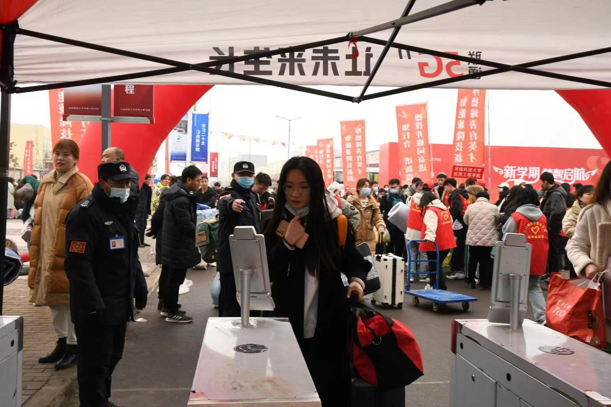
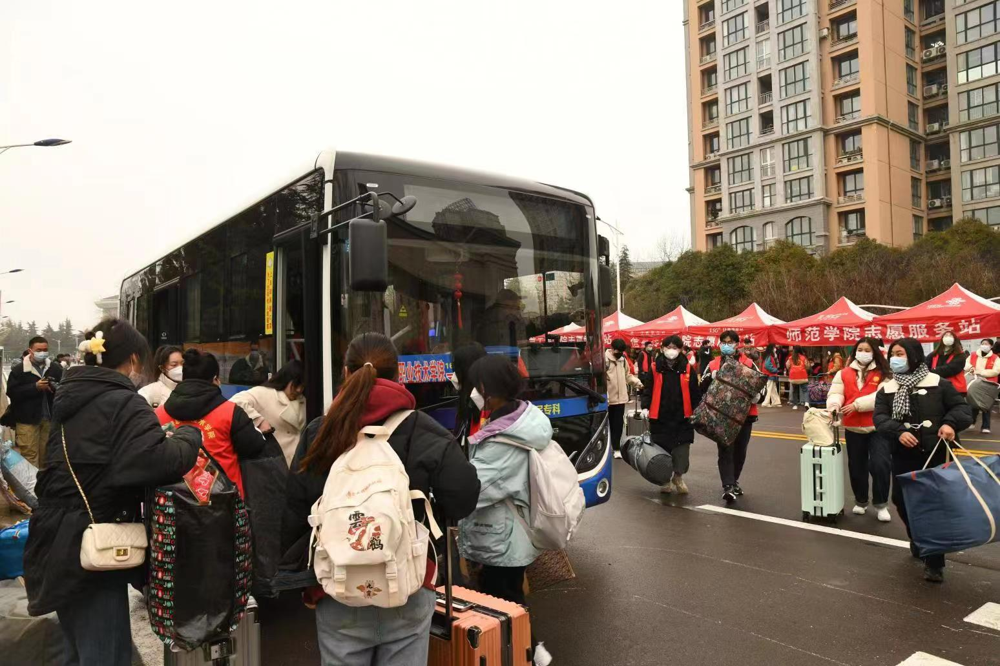

上一条：新学期学院领导深入寝室关心慰问学生
下一条：我校师生无偿献血获得“感谢状”
关闭
版权所有 三门峡职业技术学院版权所有 地址：河南省三门峡市崤山西路42号豫ICP备2022004715号 豫公安网备41120202000020

新学期，新气象。孟春时节，学院广大学子于2023年2月11日至12日完成返校报到。
学院领导高度重视此次学生返校工作，按照“乙类乙管”新阶段要求，提前研究制定《2022-2023学年第二学期学生返校工作方案》，全体教职工严格落实方案要求，确保学生安全返校，顺利报到。
为了做好学生返校报到工作，学院周密部署、细致服务，为返校学子提供最大便利。通过前期摸排学生返校方式，学院在三门峡火车站、长途汽车站、高铁南站安排专门车辆，点对点接送返校学生直达学校。为保障全体返校学生健康安全，学院在校门口进行身份核验，为健康异常的学生提供健康驿站。入校后，各院部志愿者服务站热情为学生提供信息登记、行李搬运等服务，整个环节分工明确，组织有序。
学生返校期间，党委书记杨彤、院长颉潭成带领学院相关领导来到返校现场，视察工作开展情况，慰问接待工作人员，并与学生进行亲切交谈，欢迎他们回到三职大家庭，同时勉励学生返校后认真学习、加强锻炼，保持良好心态。
新学期意味着新开始，学院将与返校学生一起踔厉奋发，共同谱写新篇章。
版权所有 三门峡职业技术学院版权所有 地址：河南省三门峡市崤山西路42号豫ICP备2022004715号 豫公安网备41120202000020